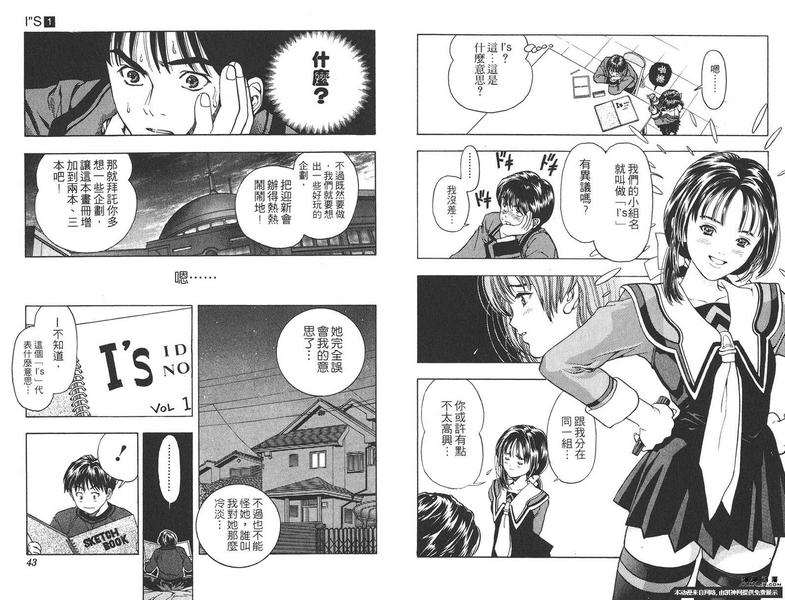
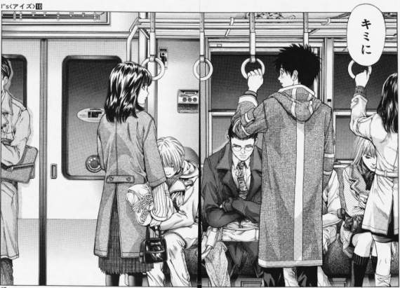
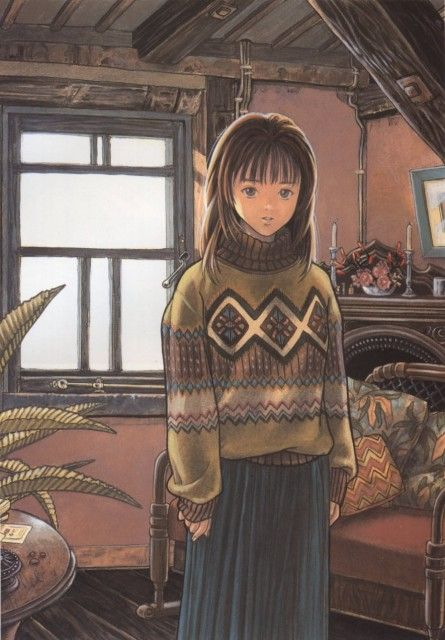

當初會看I"S也挺單純的，剛好家裡有一整套二手I"S再加上一直都很喜歡桂正和的畫風，而且感覺自己遲早都會看，那不如現在就看一看。
先說我看完後的感覺好了，我當初是先看單行本第一集，後來因為準備段考而停了兩個禮拜沒看，再拿起來看時就是季子初當場了（單行本2），重點來了，一開始看的時候我其實覺得雖然有些早期戀愛漫畫的情節會讓我有點不耐煩，但整體給我的快樂都還是能蓋過不耐
但到單行本3開始吧，男主角一貴的廢感開始讓我躁起來了，而直到他們去京都回來一貴突然甩尾換車道又亂發瘋後，我大腦直接當機了，整個心情超不快的。
好這裡先停一下，我必需要先說，我能確定的告訴你，我認為葦月伊織超完美還特別婆，季子也很棒，但沒啥特別的感覺，而剩下兩個I說真的，我其實看到很煩躁，有很多地方其實我都不是很懂為什麼作者要這樣設計，重點是我真的看到很躁，而且一貴後面跟他們的互動讓我看到基本上是邊嘖邊看。
讓我們繼續，在不劇透的前提下，我就只說一句:一貴廢到哭，廢到我看完後的幾天，腦中都時不時會想，到底是為什麼可以廢成這樣。而其他就留給大家自己去看叻。
我是一天看完的，心情可以說就像洗三溫暖一樣，當初看完已經快凌晨2點了，當時真的有一種，哦好啦結局是這樣可以了啦，至少沒有因為一貴越變越慘。
最後說推薦I"S嗎，其實還是推，因為雖然劇情不是很對我胃，但它還是有許多橋段所，是真的讓人有某些情緒的，而且作畫是真的頂。


謝謝大家看到這裡